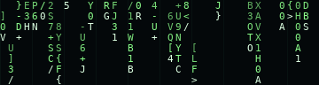

📝
posts .md
🗑️
lixeira
🌐
Crows Blog - Internet Explorer 5.5 [modo noturno]
_
□
×
Arquivo
Editar
Exibir
Favoritos
Ferramentas
Ajuda
◀
▶
✕
↻
⌂
Endereço
🌐
http://www.crows-blog.net/
▾
Ir
Links
✎ Posts
✉ Contato
☁ Topo
✳
CROWS
_BLOG
café, café, café, café
☆ SINAL ENCONTRADO ☆
conexão instável
⌂ início
✎ diário
☻ sobre mim
♡ links
BEM VINDO AO MEU SITE
Crows Blog

✎
LOGS RECENTES
/// transmissões direto do meu cérebro
procurando arquivos de texto...
← voltar aos logs
/// arquivos de texto da pasta posts/
voltar ao começo ↑
🌐 Concluído
▣ Internet
◢
🪟
Iniciar
🌐 Crows Blog - Microsoft Internet Explorer
12:00
🙃
Opa! Você fechou a internet.
Isso não parece certo...
abrir Crows Blog de novo